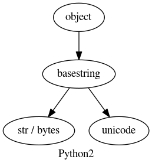
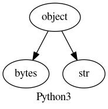

Utilities¶
Some utility functions and classes.
-
class
embci.utils.AttributeDict(*a, **k)[source]¶ Bases:
collections.abc.MutableMappingGet items like JavaScript way, i.e. by attributes.
Notes
When getting an attribute of the object,
__getattribute__()will be called:d.xxx <==> getattr(d, xxx) <==> d.__getattribute__('xxx') + d.__getattr__('xxx')
>>> d = dict(name='bob') >>> d.clear # d.__getattribute__('clear') <function clear>
If the object doesn’t have that attribute,
__getattribute__()will fail and then__getattr__()will be called. If__getattr__()fails too, python will raiseAttributeError.>>> d = {'name': 'bob', 'age': 20} >>> d.name AttributeError: 'dict' object has no attribute 'name'
Getting an item from a dict can be achieved by calling
__getitem__():d.get(key) <==> ( d[key] or default ) d[key] <==> d.__getitem__(key)
>>> d['age'] KeyError: 'age' >>> d.__getitem__('age') KeyError: 'age' >>> d.get('age', 100) 100
Default
dict.__getattr__is not defined. Here we link it todict.get. After modification, attributes likepop,keyscan be accessed by__getattribute__()and items can be accessed by__getattr__()and__getitem__().Examples
>>> d = AttributeDict({'name': 'bob', 'age': 20}) >>> d.keys # call d.__getattribute__('keys') <function keys> >>> d.name # call d.__getattr__('name'), i.e. d.get('name', None) 'bob' >>> d['age'] # call d.__getitem__('age') 20
An element tree can be easily constructed by cascading
AttributeDictandAttributeList.>>> bob = AttributeDict({'name': 'bob', 'age': 20, 'id': 1}) >>> tim = AttributeDict({'name': 'tim', 'age': 30, 'id': 2}) >>> l = AttributeList([tim, bob]) >>> alice = AttributeDict(name='alice', age=40, id=3, friends=l) >>> alice.friends.name == ['bob', 'tim'] True >>> alice['friends', 2] == tim True >>> tim.friends = AttributeList([bob, alice]) >>> alice['friends', 2, 'friends', 3] == alice True
-
copy(self, cls=None)[source]¶ A copy of self. Class of returned instance can be specified by the optional second argument cls, default current class.
Examples
>>> type(AttributeDict(a=1, b=2)) embci.utils.AttributeDict >>> type(AttributeDict(a=1, b=2).copy()) embci.utils.AttributeDict >>> type(AttributeDict(a=1, b=2).copy(dict)) dict >>> def generate_list(a, b): print('elements: ', a, b) return [a, b] >>> type(AttributeDict(a=1, b=2).copy(generate_list)) elements: 1, 2 [1, 2]
-
-
class
embci.utils.AttributeList(*a, **k)[source]¶ Bases:
collections.abc.MutableSequenceGet elements in list by attributes of them. It works much like a jQuery init list. In this list, elements with an id attribute can be selected by normal __getitem__ way.
Examples
>>> l = AttributeList([ {'name': 'bob', 'age': 16}, {'name': 'alice', 'age': 20}, {'name': 'tim', 'age': 22} ]) >>> l.name ['bob', 'alice', 'tim'] >>> l.age [16, 20, 22]
>>> l2 = AttributeList([ {'id': 999, 'name': 'dot'}, {'id': 1, 'name': 'line'} {'id': 2, 'name': 'rect'} ]) >>> l2[999] {'id': 999, 'name': 'dot'} >>> l2[0] # if `id` selector failed, normal list indexing is used {'id': 999, 'name': 'dot'}
>>> l2[-2] == l2[1] # minus number is regarded as index True
-
class
embci.utils.BoolString[source]¶ Bases:
strCreate a real boolean string. Boolean table can be replaced.
Notes
bool(s) will always return True if length of s is non-zero. This class is derived from str and make its instances real boolean.
Examples
>>> bool(BoolString('True')) True >>> bool(BoolString('False')) False >>> bool(BoolString('Yes')) True >>> bool(BoolString('Nop', table={'Nop': False})) False
-
class
embci.utils.CachedProperty(func)[source]¶ Bases:
objectDescriptor class to construct a property that is only computed once and then replaces itself as an ordinary attribute. Deleting the attribute resets the property.
-
class
embci.utils.LockedFile(filename=None, *a, **k)[source]¶ Bases:
objectContext manager for creating temp & auto-recycled & locked files
Here’s something to be decleared on locking a file:
fcntl.lockf() most of the time implemented as a wrapper around the fcntl() locking calls, which bound to processes, not file descriptors.
fcntl.flock() locks are bound to file descriptors, not processes.
On at least some systems, fcntl.LOCK_EX can only be used if the file descriptor refers to a file opened for writing.
fcntl locks will be released after file is closed or by fcntl.LOCK_UN.
-
class
embci.utils.Singleton¶ Bases:
object
-
class
embci.utils.SingletonMeta[source]¶ Bases:
typeMetaclass used to create Singleton classes.
Examples
>>> from embci.utils import SingletonMeta, Singleton >>> class Test2(object): # Python 2 only __metaclass__ = Singleton >>> class Test3(object, metaclass=SingletonMeta) # Python 3 only pass
>>> class Test(object, Singleton) # Python 2 & 3 def __init__(self, *a, **k): self.args = a self.kwargs = k >>> Test() <__main__.Test at 0x7f3e09e99390> >>> Test() <__main__.Test at 0x7f3e09e99390> >>> Test() == Test() True
Instance can be re-initalized by providing argument reinit:
>>> Test(1, 2, 3).args (1, 2, 3) >>> Test(2, 3, 4).args (1, 2, 3) >>> vars(Test(2, 3, 4, reinit=True, verbose=logging.INFO)) {'args': (2, 3, 4), 'kwargs': {'verbose': 20}}
-
class
embci.utils.TempStream(*args, **kwargs)[source]¶ Bases:
objectContext manager to temporarily mask streams like stdout/stderr/stdin.
Examples
You can redirect standard output to a file just like shell command
$ python test.py > /var/log/foo.log:>>> with TempStream(stdout='/var/log/foo.log'): ... print('bar', file=sys.stdout) >>> open('var/log/foo.log').read() bar
If no target stream (file-like object) specified, a StringIO buffer is used to collect message from origin stream. All string from buffers will be saved in an AttributeDict and returned for easier usage.
>>> # mask stdout and stderr to a string buffer >>> with TempStream('stdout', 'stderr') as ts: ... print('hello', file=sys.stdout, end='') ... print('error', file=sys.stderr) >>> type(ts) embci.utils.AttributeDict >>> str(ts) "{'stderr': 'error\n', 'stdout': 'hello'}" >>> ts.stdout + ' ' + ts['stderr'] 'hello error\n'
-
embci.utils.check_input(prompt, answer={'': True, 'y': True, 'n': False}, timeout=60, times=3)[source]¶ This function is to guide user make choices.
Examples
>>> check_input('This will call pip and try install pycnbi. [Y/n] ', {'y': True, 'n': False}) [1/3] This will call pip and try install pycnbi. [Y/n] 123 Invalid input `123`! Choose from [ y | n ] [2/3] This will call pip and try install pycnbi. [Y/n] y # return True
-
embci.utils.duration(sec, name=None, warning=None)[source]¶ Want to looply execute some function every specific time duration? You may use this deocrator factory.
- Parameters
- secint
Minimum duration of executing function in seconds.
- namestr, optional
Identify task name. Default use id(function).
- warningstr, optional
Warn message to display if function is called too frequently.
Examples
>>> @duration(3, '__main__.testing', warning='cant call so frequently!') ... def testing(s): ... print('time: %.1fs, %s' % (time.clock(), s))
>>> while 1: ... time.sleep(1) ... testing('now you are executing testing function') ... time: 32.2s, now you are executing testing function cant call so frequently! # time: 33.2s cant call so frequently! # time: 34.2s time: 35.2s, now you are executing testing function cant call so frequently! # time: 36.2s cant call so frequently! # time: 37.2s ...
-
embci.utils.ensure_unicode(str, unicode, bytes, ..., sn) ==> (u0, u1, ..., un)[source]¶ - 
In python version prior to 3.0:
str : 8-bits 0-255 char string
unicode : string heading with
u''
In python3+:
bytes: 8-bits 0-255 char string heading with
b''str: unicode string
Note
bytes is an alias to str in python2
-
embci.utils.format_size(*a, **k)[source]¶ Turn number of bytes into human-readable str. Bytes are abbrivated in upper case, while bits use lower case. Only keyword arguments are accepted because any positional arguments will be regarded as a size in bytes.
- Parameters
- unitsarray of str
Default ‘Bytes’, ‘KB’, ‘MB’, ‘GB’, ‘TB’, ‘PB’.
- decimalsarray of int
Default 0, 1, 2, 2, 2, 2. Estimated result: 10 Bytes, 1.0 KB, 1.12 MB, 1.23 GB, 1.34 TB, 1.45 PB.
- baseint
Default 1024, can be set to 1000.
- inbitsbool
Whether convert output to bits.
Examples
>>> format_size(2**10 - 1) u'1023 B' >>> format_size(2**10) u'1.0 KB' >>> format_size(1024 * 1024, base=1000, decimals=10) u'1.048576 MB' >>> format_size(2**30, inbits=True) u'8.00 Gb'
-
embci.utils.get_boolean(v, table={'on': True, 'none': False, 'false': False, '0': False, 'y': True, 'n': False, '1': True, 'true': True, 'no': False, 'yes': True, 'off': False})[source]¶ convert string to boolean
-
embci.utils.get_config(key, default=None, type=None, configfiles=None, section=None)[source]¶ Get configurations from environment variables or config files. EmBCI use INI-Style configuration files with extention of .conf.
- Parameters
- keystr
- defaultoptional
Return default if key is not in configuration files or environ,
- typefunction | class | None, optional
Convert function to be applied on the result, such as int or bool.
- configfilesstr | list of str, optional
Configuration filenames.
- sectionstr | None, optional
Section to search for key. Default None, search for each section.
See also
configparser
Notes
Configuration resolving priority (from low to high): - system configuration files (loaded in embci.configs) - specified configuration file[s] (by argument configfiles) - environment variables (os.environ)
-
embci.utils.input(prompt=None, timeout=None, flist=[<_io.TextIOWrapper name='<stdin>' mode='r' encoding='UTF-8'>])[source]¶ Read from a list of file-like objects (default only from sys.stdin) and return raw string as python2 function raw_input do.
The optional second argument specifies a timeout in seconds. Both int and float is accepted. If timeout, an error will be thrown out.
This function is PY2/3 & Linux/Windows compatible (On Windows, only sockets are supported; on Unix, all file descriptors can be used.)
-
embci.utils.load_configs(fn=None, *fns)[source]¶ Read configuration files and return an AttributeDict.
Notes
Configurations priority(from low to high):
On Unix-like system: project config file: "${EmBCI}/files/service/embci.conf" system config file: "/etc/embci/embci.conf" user config file: "~/.embci/embci.conf" On Windows system: project config file: "${EmBCI}/files/service/embci.conf" system config file: "${APPDATA}/embci.conf" user config file: "${USERPROFILE}/.embci/embci.conf"
Examples
This function accepts arbitrary arugments:
one or more filenames
one list of filenames
>>> load_configs('~/.embci/embci.conf') >>> load_configs('/etc/embci.conf', '~/.embci/embci.conf', 'no-exist') >>> load_configs(['/etc/embci.conf', '~/.embci/embci.conf'], 'no-exist')
-
embci.utils.mapping(a, low=None, high=None, t_low=0, t_high=255)[source]¶ Mapping data to new array values all in duartion [low, high]
- Returns
- outndarray
Examples
>>> a = [0, 1, 2.5, 4.9, 5] >>> mapping(a, 0, 5, 0, 1024) array([ 0. , 204.8 , 512. , 1003.52, 1024. ], dtype=float32)
-
embci.utils.mkuserdir(func)[source]¶ Create user folder at
${DIR_DATA}/${username}if it doesn’t exists.Examples
When used as a decorator, it will automatically detect arguments of wrapped function to get the specified username argument and create its folder.
>>> @mkuserdir ... def save_user_data(username): ... path = os.path.join(DIR_DATA, username, 'data-1.csv') ... write_data_to_csv(path, data) >>> save_user_data('bob') # folder ${DIR_DATA}/bob is already created >>> save_user_data('jack') # write_data_to_csv don't need to care this
Or use it with username directly:
>>> mkuserdir('john') >>> os.listdir(DIR_DATA) ['example', 'bob', 'jack', 'john']
-
embci.utils.random_id(length=8, choices='abcdefghijklmnopqrstuvwxyz0123456789')[source]¶ Generate a random ID composed of digits and lower ASCII characters.
-
embci.utils.verbose(func, *args, **kwargs)[source]¶ Add support to any callable functions or methods to change verbose level by specifying keyword argument verbose=’LEVEL’.
Verbose level can be int or bool or one of logging defined string [‘NOTSET’, ‘DEBUG’, ‘INFO’, ‘WARNING’, ‘ERROR’, ‘CRITICAL’]
Notes
Verbose level may comes from ways listed below (sorted by prority), which also means this function can be used under these situations.
class default verbosity
>>> class Testing(object): ... def __init__(self): ... self.verbose = 'INFO' ... @verbose ... def echo(self, s, verbose=None): ... # verbose = verbose or self.verbose ... logger.info(s)
default argument
>>> @verbose ... def echo(s, verbose=True): ... logger.info(s) >>> echo('hello') hello
positional argument
>>> echo('hello', None)
keyword argument
>>> echo('hello', verbose=False)
Examples
>>> @verbose ... def echo(s): ... logger.info(s) >>> echo('set log level to warning', verbose='WARN') >>> echo('set log level to debug', verbose='DEBUG') set log level to debug >>> echo('mute message', verbose=False) # equals to verbose=ERROR >>> echo('max verbose', verbose=True) # equals to verbose=NOTSET max verbose >>> echo('default level', verbose=None) # do not change verbose level
-
embci.utils.virtual_serial(verbose=20, timeout=120)[source]¶ Generate a pair of virtual serial port at
/dev/pts/*. Super useful when debugging without a real UART device.- Parameters
- verbosebool | int
Logging level or boolean specifying whether print serial I/O data count infomation to terminal. Default logging.INFO.
- timeoutint
Virtual serial connection will auto-break to save system resources after waiting until timeout. -1 specifying never timeout. Default is 120 seconds (2 mins).
- Returns
- flag_closethreading.Event
Set flag by flag_close.set to manually terminate the virtual serial connection.
- port1str
Master serial port.
- port2str
Slave serial port.
Examples
>>> flag = virtual_serial(timeout=-1)[0]
Assuming it’s
/dev/pts/0 -- /dev/pts/1>>> s = serial.Serial('/dev/pts/1',115200) >>> m = serial.Serial('/dev/pts/0',115200) >>> s.write('hello?\n') 7 >>> m.read_until() 'hello?\n' >>> flag.set()